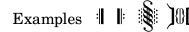
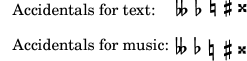
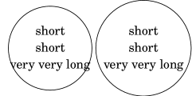

| [ << New for musical notation ] | [Top][Contents] | [ New for specialist notation >> ] |
| [ < Editorial annotation improvements ] | [ Up: New for musical notation ] | [ New for specialist notation > ] |
Text and font improvements
- Triangular note heads have been added to the Emmentaler font.
They can be used by overriding
NoteHead.styletoarrow.![[image of music]](../66/lily-7d234004.png)
- A new
\bar-linemarkup command to print bar lines in text is now available.\markup { \override #'(word-space . 2) \line { Examples \fontsize #-5 \translate-scaled #'(0 . 2) { \bar-line ":|." \bar-line ".|:" \bar-line ";!S!;" \bar-line "]{|}[" } } }

- The syntax for customizing text and music fonts has been changed.
Instead of
\paper { #(define fonts (set-global-fonts #:music "Name of music font" #:brace "Name of music brace font" #:roman "Name of serif font" #:sans "Name of sans-serif font" #:typewriter "Name of typewriter font")) }or
\paper { #(define fonts (make-pango-font-tree "Name of serif font" "Name of sans-serif font" "Name of typewriter font" factor)) }the new syntax is
\paper { property-defaults.fonts.music = "Name of music font" property-defaults.fonts.serif = "Name of serif font" property-defaults.fonts.sans = "Name of sans-serif font" property-defaults.fonts.typewriter = "Name of typewriter font" }Unlike the previous syntax, the new syntax does not interfere with font sizes, which should be set separately using
set-global-staff-sizeorlayout-set-staff-size.There is no
bracekey in the fonts alist; braces glyphs now always default to the music font. However, it is still possible to override this by using an extra font family, as shown in this example (which requires the LilyJAZZ font):\layout { \context { \Score \override SystemStartBrace.fonts.music = "lilyjazz" } } \new PianoStaff << \new Staff { c' } \new Staff { c' } >> \markup \override #'(fonts . ((music . "lilyjazz"))) \left-brace #20Because
fontsis simply a property, it is possible to override it on a per-grob basis, e.g.,\layout { \override Score.SectionLabel.fonts.roman = "Custom font" }This is preferable over the already existing
font-nameproperty, since the latter makes commands such as\boldineffective, instead requiring “Bold” to be included in thefont-namestring. Usingfontsdoes not have such effects. - The
\lookupmarkup command can now only be used for braces; for other glyphs, use the\musicglyphcommand. Instead of\lookup, it is also generally recommended to use\left-brace. - In markup, when a music font is used (such as for dynamic markings), a
glyph absent from the music font was previously rendered in a normal
text font. This is no longer the case; a warning about the missing glyph
is output instead. In order to use a text font, use the
\serif,\sans, or\typewritermarkup commands. For example:dolceP = #(make-dynamic-script #{ \markup { \serif \normal-weight dolce p } #}) { c'\dolceP }
![[image of music]](../b7/lily-ef389a3a.png)
- Small caps are now achieved by overriding
font-varianttosmall-capsinstead of overridingfont-shapetocaps. Sincefont-shapeis primarily for achieving italics, this change makes it possible to use small caps and italics at the same time. - The
font-seriesproperty is now more flexible and allows the specification of values such assemiboldandlightinstead of onlynormalandbold.The
mediumvalue is now an intermediate value betweennormalandboldrather than an equivalent ofnormal. Accordingly, the\mediummarkup command has been renamed to\normal-weight. - The new
font-stretchproperty allows the selection of a condensed or expanded font. - The text of a
VoltaBracketgrob, as set by\override Score.VoltaBracket.text = …or\set Score.repeatCommands = …, is no longer automatically typeset in a music font; use the\volta-numbermarkup command on those parts that need to be. For example, convert\set Score.repeatCommands = #'((volta "2, 5"))
to
\set Score.repeatCommands = #`((volta ,#{ \markup { \concat { \volta-number 2 , } \volta-number 5 } #})) - In markup, fingerings (
\markup \finger) and bass figures (\markup \figured-bass) now get scaled along with normal text when using\fontsize.myText = \markup { The fingering \finger { 5-4 } for a \figured-bass { 7 "6\\" } … } \myText \markup\fontsize #6 \myText
![[image of music]](../97/lily-1761db17.png)
The previous behavior can be restored by setting the global variables
legacy-figured-bass-markup-fontsizeandlegacy-finger-markup-fontsizeto#t, respectively:#(set! legacy-figured-bass-markup-fontsize #t) #(set! legacy-finger-markup-fontsize #t) myText = \markup { The fingering \finger { 4-5 } for a \figured-bass { 5+ 6 } … } \myText \markup\fontsize #6 \myText
![[image of music]](../bc/lily-68759a9b.png)
- For best clarity, the
\romanmarkup command has been renamed to\serif. Likewise, to cancel a setting of thefont-familyproperty tosansortypewriter, it should now be set toserif, notroman. - The
\textmarkup command has been removed. Instead, the\serif,\sans, or\typewritermarkup commands should be used. These commands used to set the font style only if a normal text font was used (not a musical font, such as for dynamics), but now they both set the font style and make a normal text font used. - The font size used by the
\volta-numbermarkup command has been reduced to make it better fit with surrounding text. At the same time, the size for the volta bracket number (which uses\volta-numberfor formatting by default) has been increased by the opposite amount, thus compensating for the change in the normal use case. - Some glyphs like ‘one’ or ‘accidentals.hufnagelM1’ in the Emmentaler font had overly large glyph bounding boxes due to a bug in the font production chain. This is fixed now; be warned, however, that you might experience typesetting differences because tighter bounding boxes often lead to tighter typesetting.
- New markup commands to print the textual representation of accidentals are
added:
\text-doubleflat,\text-flat,\text-natural,\text-sharp,\text-doublesharpand the general\text-accidental.\markuplist \override #'(padding . 1) \table #'(-1 -1 -1 -1 -1 -1) { "Accidentals for text:" \text-doubleflat \text-flat \text-natural \text-sharp \text-doublesharp "Accidentals for music:" \doubleflat \flat \natural \sharp \doublesharp }

- The
\circlemarkup command now listens to abboxproperty. If set to#t, the bounding box of its argument is used for the circle’s diameter.\markup { \circle { \center-column { "short" "short" "very very long" } } \override #'(bbox . #t) \circle { \center-column { "short" "short" "very very long" } } }

- The
\tagcommand is now allowed in markup environments. New markup commands are added for filtering (\keep-with-tagand\remove-with-tag) and for inserting markups (\push-to-tag,\append-to-tagand\replace-with-tag) in markup context or from music context (\pushToTagMarkup,\appendToTagMarkupand\replaceWithMarkup).test = \markup { \tag #'a a \tag #'b b c } music = \relative { c'^\test c c c } \keepWithTag #'a \music \removeWithTag #'a \music \pushToTagMarkup #'a push \music \appendToTagMarkup #'a append \music \replaceWithTagMarkup #'a replacement \music \markup { \keep-with-tag #'a \test } \markup { \remove-with-tag #'a \test } \markup { \push-to-tag #'a push \test } \markup { \append-to-tag #'a append \test } \markup { \replace-with-tag #'a replacement \test } \markup { \keep-with-tag #'a \score { \music } }
![[image of music]](../5a/lily-02719c7c.png)
- The two new markup commands
\pad-x-leftand\pad-x-rightbehave similar to\pad-xbut apply horizontal padding on one side of the markup only.
| [ << New for musical notation ] | [Top][Contents] | [ New for specialist notation >> ] |
| [ < Editorial annotation improvements ] | [ Up: New for musical notation ] | [ New for specialist notation > ] |